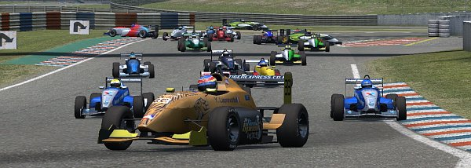
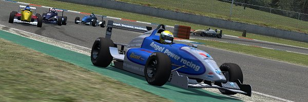
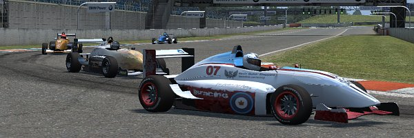
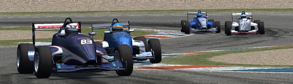
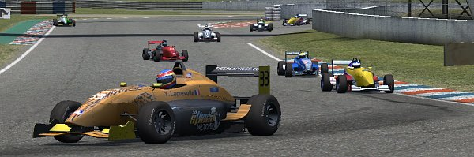
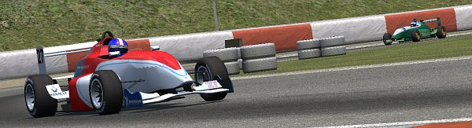
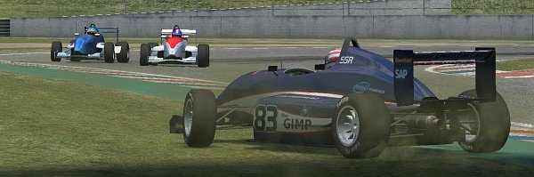
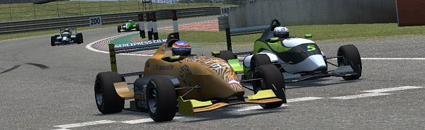

|
4th round in Speedsims' FOX series was to be run at the very short, but nonetheless diverse
Aston Cadet circuit. It's layout promised to provide close fighting and great race action -
and actually it really did provide all this... and more. It was a quite ...erm... eventful race, to say at least
Y.Laprevotte was the man on pole, with series standings' leader Adin next. LLM's MaukaZ lined
up 3rd, with APR Team, Speedsims' DaveO, EAR's T.Daams and Killer Race Team's Masato right behind.
EAR's Crash started 9th, Speedsim's Cholerix 10th.

Starting from pole proved to be half the win, and making it safe through first turns the other half -
at T3's exit Y.Laprevotte already was several car lengths off the field. Right behind was where the
lottery was taking place, and series leader Adin had got a blank, just like all Foxclub and others too.
In T1 already Adin got hit and was pushed into the sand trap on the turn's outside. Then Alain Lang,
who had started 11th, slipped in T1 and started a midfield chain reaction that kicked
EAR's Crash into Fordern. Only 4 secs later on in T2 C.Koot and Masato had to decide if repair to their
cars would be mandatory now - Cholerix was even beyond that, his car had been fatally wrecked after
being pushed into the wall, thus ending his race after only 45 secs

The winners of all this trouble meanwhile enjoyed running on unexpectedly good positions, and all the rest
was just happy not to have been involved. Gepas and Fast Jarda had inherited 2nd and 3rd position, with
T.Daams, DaveO and MaukaZ right behind. Some not even small gap behind Mustangman had been washed up to 7th
position, closely chased by Masato and K.Sheppard... and after lap1 only by the #07, as Masato had
entered pits for service and repair.
It didn't take long for K.Sheppard to pass Mustangman, but that one
refused to give in and so their struggle continued on until in 3rd lap they both spun in T1. But that did
only end their fight for 7th place, not the fight itself.
Likewise, C.Sheppard had been fighting Bmxwtins in first laps. Bmxtwins got the better end, but messed up
in lap 3 chicane, lost control and was t-boned by C.Sheppard when he spun into the #16's line.
These first 3 laps seemed to have included some family affair with the LLM team twins entertaining
the Sheppard's...

T.Daams soon had to realize that the guys directly in front and behind of him were capable to run slightly faster
laptimes than him; DaveO could pass in 2nd lap, MaukaZ in 3rd. But running now on 6th position, T.Daams could
somewhat relax from first lap's pressure - there was nobody close behind anymore. 7th place inhabitants had up to now
all run that position for a short time only until they had dropped notably back because of slipping/pitting/incidents.
Only lucky survivor was Chebbi, while on the places behind him the jolly change of positions continued on.
The front row guy were not entirely unaffected by this, as all the midfield struggle in first laps had caused drivers to pit
already and others had simply dropped back that far, that at lap 5 first had to be lapped. And they were not free
from making mistakes themselves too...
Gepas
had run wide in final turn in lap 4, thus losing 2nd place to his teammate Fast Jarda. One lap later on some
failed overoptimistic lapping attempt made him even drop down to 5th position. On the next laps he was busy getting
back close enough to MaukaZ and DaveO to attack.
Behind Chebbi,
profiting from "early pit stoppers", K.Sheppard had made it back
to 8th positions, with still Mustangman behind, though no more that close, but rather 2-3 secs off. Mustangman
was more busy staying in front of C.Koot now, who had slowly crept up to 10th position - and all of them were rushed
up by Alain Lang - until his encounter on Mustangman got him some more offtrack experience.

The fight for 3rd position continued on and it became increasingly hot. Actually it became the fight for 2nd position,
when Fast Jarda was next to slip (in 11th lap T1) and only recoverd behind his teammate Gepas. Y.Laprevotte was 8 secs safely
away, but positions 2-5 were still within same 2 secs. T.Daams was another 4 secs away behind, Chebbi 4 secs more and
K.Sheppard even a half lap behind the race leader. Fast Jarda was first from top 5 to head for pits when in lap 12 he
misjudged final turn and damaged his car's front at the barrier. He came back to the track right behind the race leader,
one lap down - about at the same time when his teammate had managed to fight down MaukaZ and DaveO and was back on
2nd place

For some weird coincident the regular service pitstops at about lap 15 caused the field to close in, though it had been
widespread before. Almost all cars were within 10 secs now again, though some were one lap down. Alain Lang and
Oscarhardwick had worked off their grid positions and first laps' trouble and were running on 5th and 6th position;
Fast Jarda stuck on 7th and T.Daams had dropped back to 10th, into a fighting group of no less than 5 cars, led by
K.Sheppard. Mustangman and C.Koot had finally dropped off top 10, while Masato, Fordern and Zombie were back in
or at least that close that the slightest slip from the guys in front would get them in. 2nd half of the race
promised to become no less thrilling than first.
And it was thrilling indeed... while Fordern and Masato were frequently switching positions, the whole "K.Sheppard"-
group closed in on Fast Jarda on the next laps. The struggle for 2nd position had been decided in pits, when Gepas'
pitstop was several secs faster than DaveO's - but meanwhile Alain Lang was running faster laptimes than MaukaZ and
Chebbi who both still had to visit pitlane. On exiting pits at lap 20, MaukaZ was back on the track right in front of
Alain Lang.

While Oscarhardwick and Fast Jarda each managed to establish some 2-3 sec gaps behind their
positions, K.Sheppard was just lucky that Fordern and Masato were going for each other all the time instead for him.
T.Daams and Zombie had lost some 2 secs on those when they stuck in traffic; Adin benefited from this and managed
to get closer to that group, first time in this race for him to have a glimpse on top 10 after first turn incident.
In lap 23 Masato decided to do a little more attacking on K.Sheppard to fight off Fordern. He was able to pass and
got the #07 driver now play buffer on him. K.Sheppard only had to stand Fordern for one lap, when that one slipped
in 24th lap and dropped behind T.Daams. That established a new fighting group, this one now made up from T.Daams,
Fordern, Zombie and Adin.

In lap 26, T1, events took an unexpected turn, when DaveO slipped and spun, thus throwing away a safe podium positions
when Alain Lang came rushing by only few seconds after he had managed to pass MaukaZ in the same turn. Alain Lang
had started 11th, pitted twice and been in 3 incidents... and was now heading for a podium finish, with only 5 laps
to go still.
One of the race's more unlucky fellows, Adin, was at least
working up some more position in last laps and had just overtaken Zombie and Fordern.
On last 2 laps, almost all positions had finally been sorted out. Or at least they were when T.Daams seized first
opportunity to rid K.Sheppard of 10th position in lap 29.

Y.Laprevotte was first to cross the finishing line,
never been endangered once he had passed T2 in first lap. Gepas finished 2nd after having experienced quite some ups
and downs, while Alain Lang probably was both happy and surprised to have made a podium in this race. MaukaZ
finished 4th and DaveO a very unlucky 5th. Oscarhardwick had been able to close in on him in final lap but
had run out of racetime to attack. He finished 6th, Chebbi 7th - probably being the only one who had had a less
eventful race, unlike fast Jarda on 8th position, who was probably even more unhappy than DaveO
For full race result, check
here
|